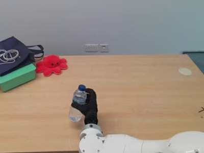
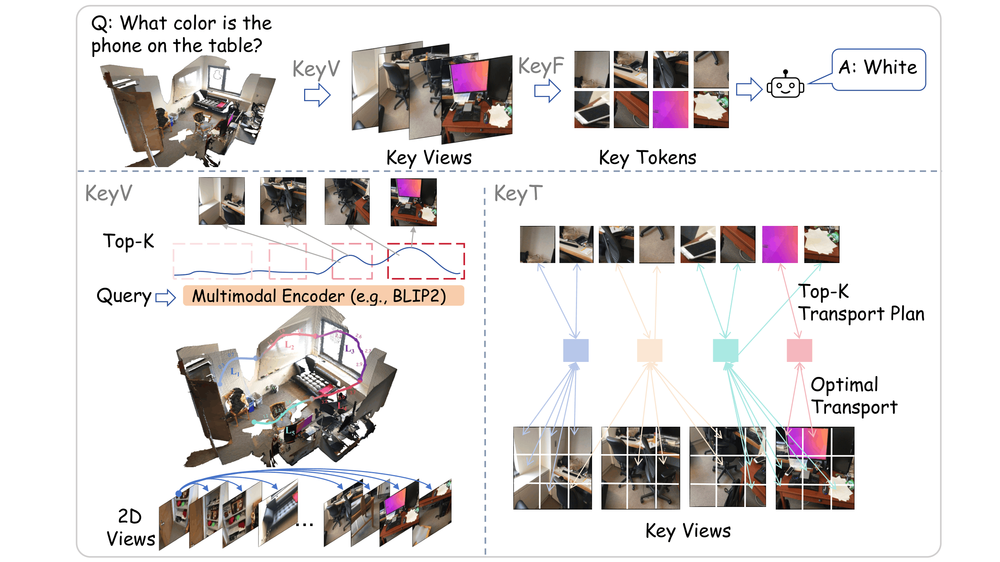
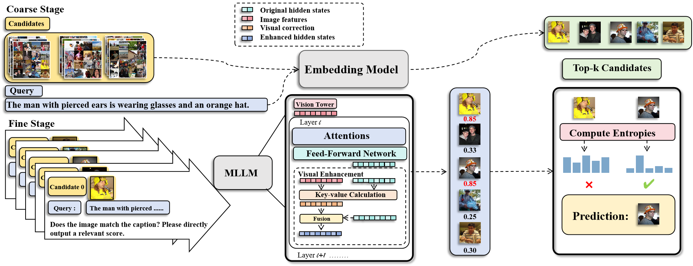

REAL-WORLD ROBOTICSHas GPT-6-Astra Achieved Embodied Intelligence?
A collaborative study of foundation models for robotic manipulation and navigation, spanning simulated benchmarks and real-world robot deployments.
ROBOTICS · EMBODIED INTELLIGENCE
From understanding to action.
I study Robotics Engineering at Shenzhen University. I am currently a Robotics Algorithm Engineer Intern at ACE Robotics, exploring embodied intelligence and the connection between perception, language, and action.
NEW Our collaborative report on embodied intelligence is now on arXiv. Read the report ↗
KeyVT was accepted to ICML 2026.
Joined ACE Robotics as a Robotics Algorithm Engineer Intern.
RETLLM was accepted to ICASSP 2026.

REAL-WORLD ROBOTICSA collaborative study of foundation models for robotic manipulation and navigation, spanning simulated benchmarks and real-world robot deployments.

Geometry-aware view selection and optimal-transport token selection for efficient, training-free 3D scene understanding.

A coarse-to-fine retrieval framework that uses multimodal language models without additional training or task-specific data.
Robotics Algorithm Engineer Intern
Feb 2026 — Present
Robotics Engineering
Shenzhen, China
LET’S CONNECT
For conversations about robotics, multimodal learning, and embodied intelligence.